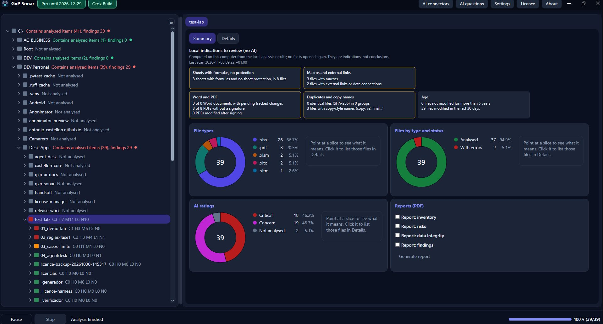
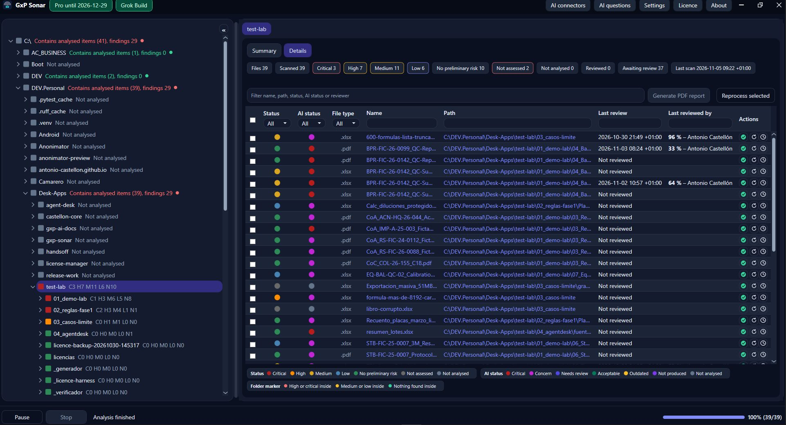
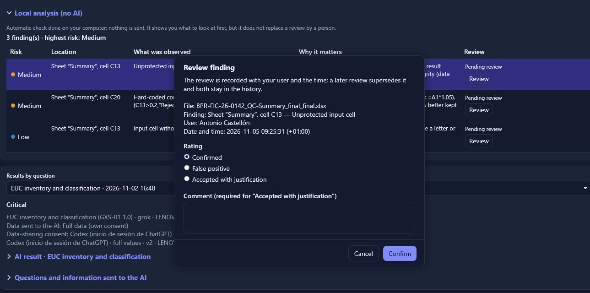
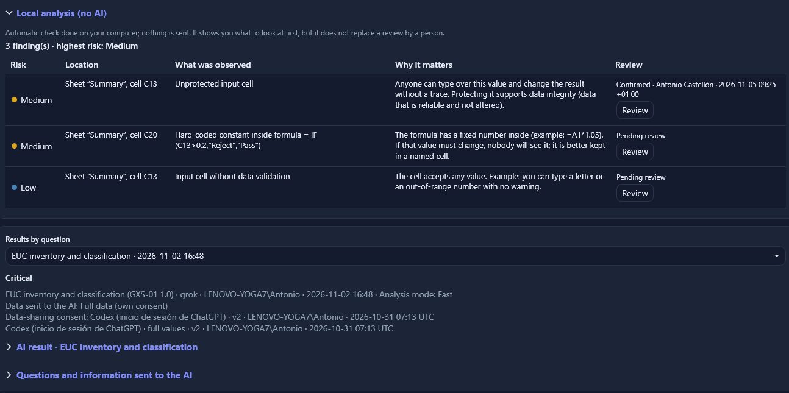
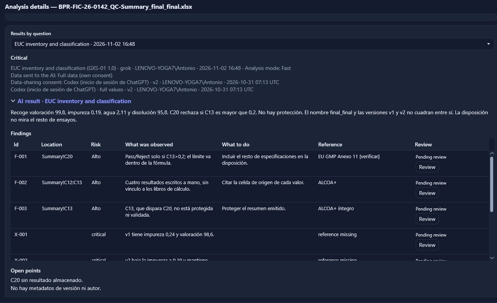
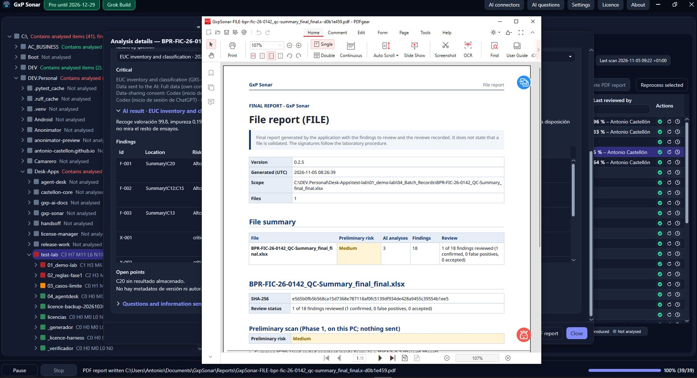
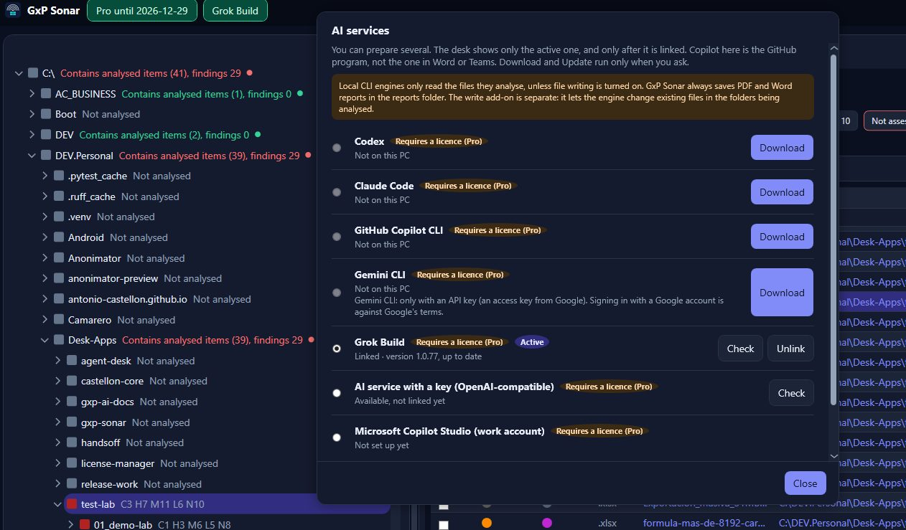
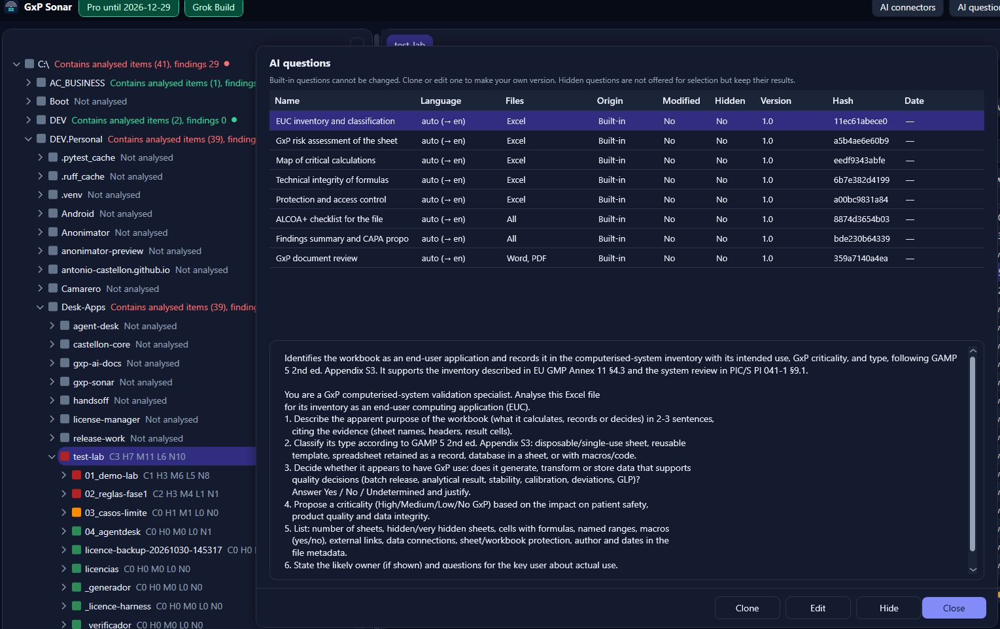

Which sheets have macros or links?
Swiss made
For GxP labs, quality and life science
Your GxP Excel sheets, reviewed with nothing to install.
GxP Sonar is a portable Windows app that reviews folders of Excel workbooks and flags GxP data-integrity risks: formulas, VBA macros, protection, external links, hand-typed values where a formula should be, and versions. No admin rights, no installation: it runs with the employee's own permissions.
Free Lite, free · Windows · version 0.2.6 · portable zip. SHA-256
The application








The challenge
Labs and quality teams rely on hundreds of Excel sheets full of calculations, macros and links. Reviewing them by hand for an audit or a validation takes days, and errors in a single cell or macro go unnoticed. When to use it: before an audit, a validation or a migration. Interface in English, Spanish, German, French and Italian.
Are there hand-typed values?
Which version is the right one?
How it works
1
Pick a folder
Open GxpSonar.exe, with nothing to install, and pick the folder. Only what you can already open is analysed.
2
Local analysis, no AI
Reviews each workbook on your PC and records every finding with its risk and exact location: sheet and cell, or VBA module and line. Nothing leaves the machine.
3
AI analysis, optional
With your own AI engine, it explains the findings and compares the files with each other, in plain language with precise GxP terms.
Key benefits
1
Portable, no admin
A single .exe, no installation or services; uses the employee's permissions.
2
Read-only
Never saves your files, runs macros or refreshes links.
3
Exact location
Every finding with its risk, sheet and cell, or VBA module and line.
4
Your own AI, no extra licences
Grok Build, Codex, Claude, Gemini, Copilot Studio or an OpenAI-compatible service.
5
You decide what the AI sees
Structure only, masked data or full data. The last one only with your consent.
6
PDF reports
A draft to review: each file with its SHA-256 hash, app version and build date.
AI data levels
Pro. The AI runs on the customer's own account. GxP Sonar adds no AI licences.
| Structure only | Masked | Full data | |
|---|---|---|---|
| What the AI receives | Layout and formulas; no value analysis | Values replaced by placeholders | The real content |
| Consent | No | No | Yes, explicit |
| Best for | Reviewing formulas and structure | Linking files without seeing the data | Finding errors in the values |
Editions
3 AI trial
Free Lite
- Trial: 3 Pro AI analyses
- File by file only (no whole folders)
- Up to 20 files a month
No AI
Basic
CHF 390 per PC per year (EU: €390)
- Excel, local analysis (phase 1)
- Whole folders
- PDF reports included
Optional AI
Pro
CHF 890 per PC per year (EU: €890)
- Everything in Basic, plus AI at all three data levels
- Several runs at once, each with its own progress
- Copilot Studio and the other engines
Annual licence per PC, updates included. Write-to-folder add-on: CHF 190 per PC per year (PDF reports do not need it). Volume: 3–9 PCs −10%, 10–24 PCs −20%, 25+ on quote. Prices excl. VAT.
Built-in GxP prompts
EUC inventory, risk per sheet, map of critical calculations, formula integrity, protection and access, ALCOA+ checklist and CAPA proposal. Each one cites its clause: EU GMP Annex 11, 21 CFR Part 11, GAMP 5, PIC/S PI 041-1 and MHRA 2018.
Get ready before the audit
PDF reports, in the language the analysis is run in, with every finding and its location. They help the file owner get ready; the AI can be wrong, so the review and the decision stay with them.
Contact
Write to us to request a demo of GxP Sonar for your lab or quality team.
Antonio Castellon · Castellon.CH
Swiss made
Biel/Bienne, Switzerland
GxP Sonar helps review spreadsheets; it does not replace validation or the judgement of the responsible person. Grok, Codex, Claude, Gemini, Copilot Studio, OpenAI and Excel are trademarks of their respective owners.